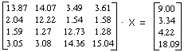
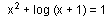
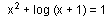

Numericka matematika
feb. '96.
asistent: Milan Drazic, smer: M
1. Data je funkcija: .
Odrediti maksimalan korak h interpolacije koji na intervalu [1, 2] garantuje
tacnost kvadratne interpolacije  /
2.
/
2.
2. Izracunati sa tacnoscu  :
:

3. Koristeci metodu LU dekompozicije, racunajuci sa 5 decimala, resiti sistem:

4. Koristeci metodu proste iteracije, sa tacnoscu  ,
resiti jednacinu:... .
,
resiti jednacinu:... .